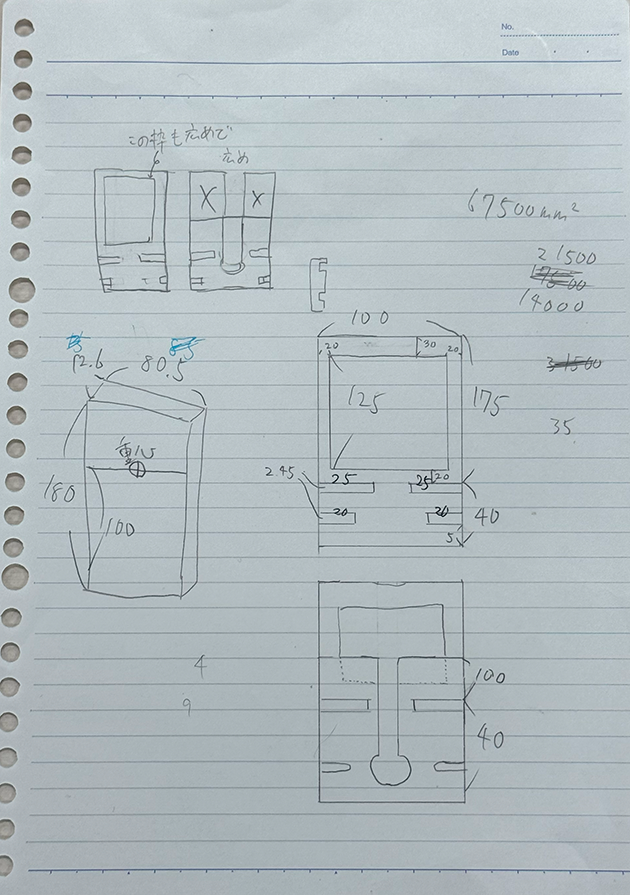
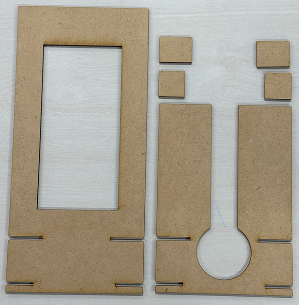
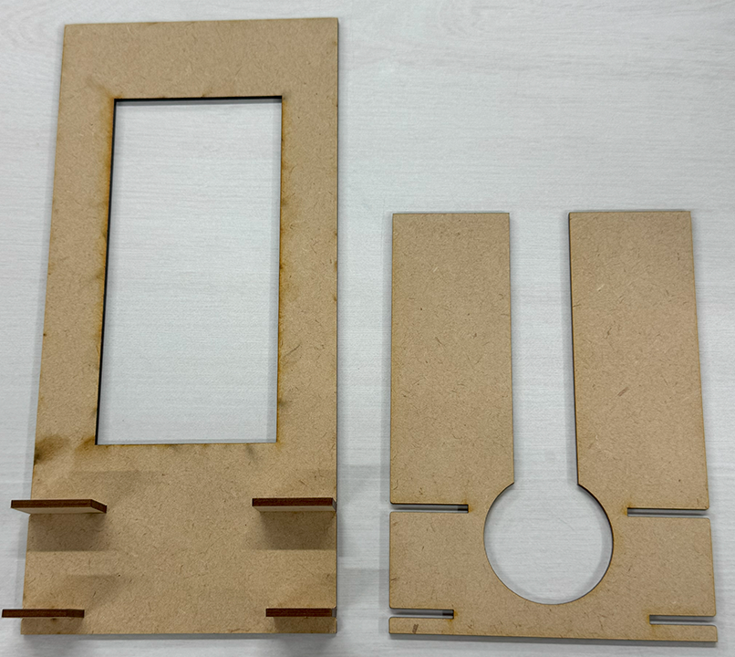
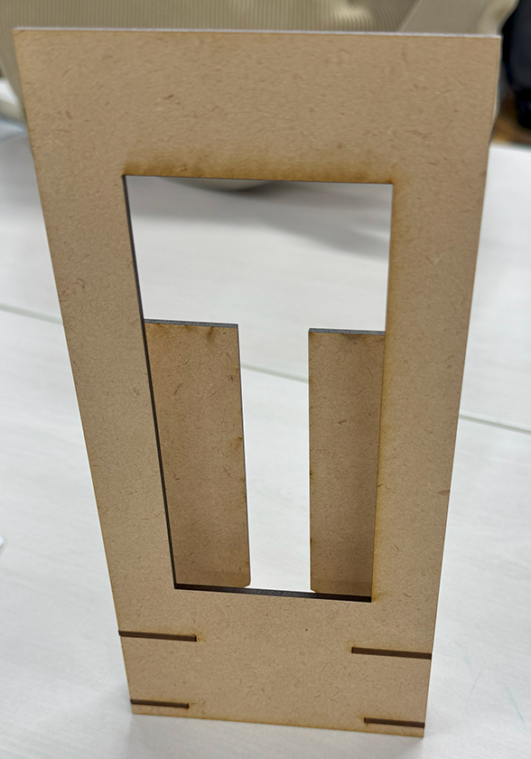
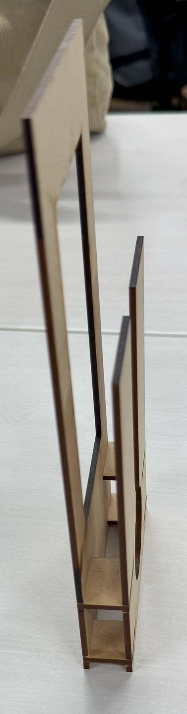
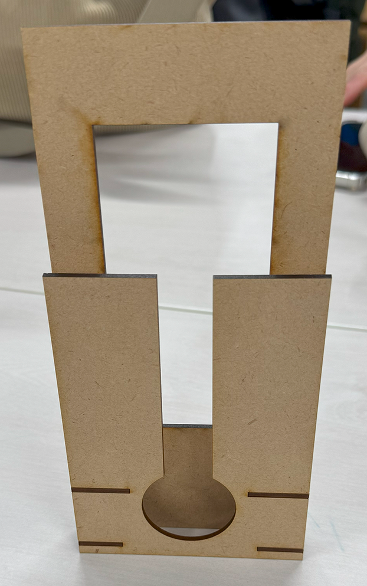
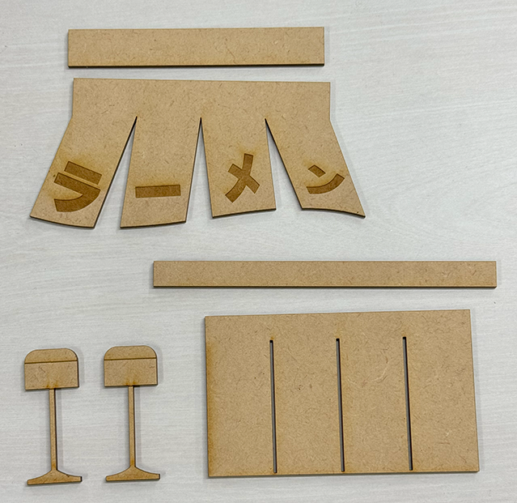
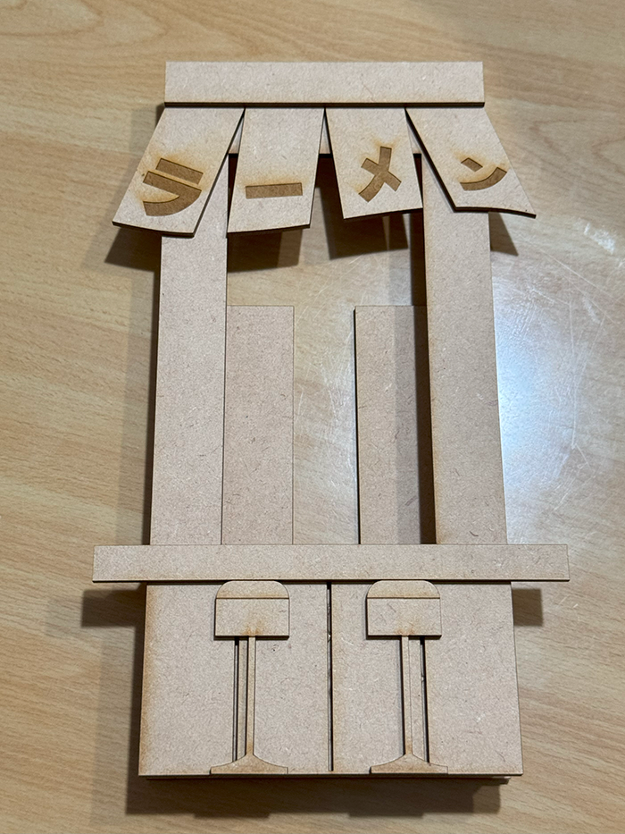

スマホスタンドにフレームをつけて、画面に写真や動画を写すとまるでディスプレイ
に見えることを利用して、面白いスマホスタンドを作ろう！！と思ったのがきっかけ
で、この作品を制作しました！！
【スケッチ】

↑画像イメージ1
飾り付け以外の、骨組みのスケッチ。
スマホケースに干渉しないように、サイズにゆとりを持たせつつ、有線充電も可能に
するよう、背面には大きめの穴を開けました！
【レーザーカッティング】
まずは骨組みを切り出します。

↑画像イメージ2
見事スケッチ通りに切り出せました！
これを・・・

↑画像イメージ3
こうして・・・

↑画像イメージ4
こうです！！

↑画像イメージ5
横

↑画像イメージ6
後ろ
【飾り付け】
誰がみてもラーメン屋台だとわかるように、シンプルなデザインで切り出します。

↑画像イメージ7
こちらを組み立てて・・・

↑画像イメージ8
こうなります！！
ついに完成です！！
実際に使用してみた動画↓
これにスマホをいれれば、どんな時でもラーメン屋台の雰囲気を楽しむことができます！
心が動くレベルで言えば、「美味しそう」、「面白い」が当てはまるのではないでしょうか。
【設計ファイル】
表面.dxf
表面.ai
裏面.dxf
裏面.ai
接続パーツ.dxf
接続パーツ.ai
飾り付け.dxf
飾り付け.ai